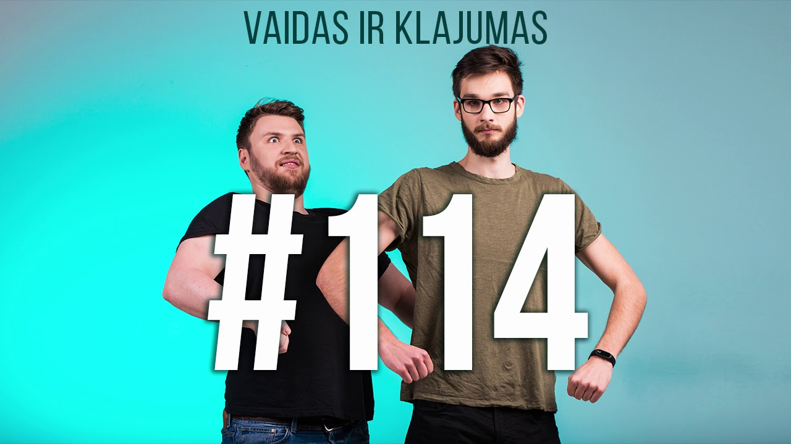
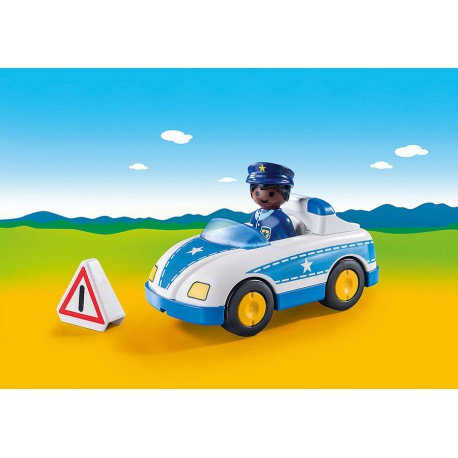
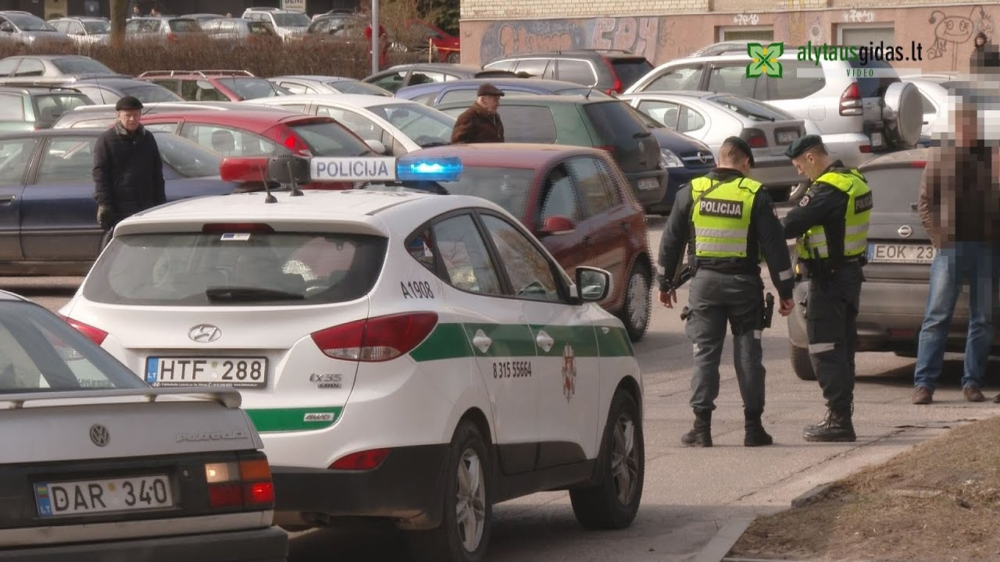

Photo gallery
2020.10.29 07:27








- Kia Rio Automobiliai | Autoplius.lt
automobilis, kabina, vagonas, vežimas, vežimėlis, vagonetė, variklis, judinamasis nervas, motoras, judinamasis raumuo - Naudoti automobiliai | Parduodami automobiliai | Longo.lt
Jus domina parduodami Kia Rio automobiliai? Parduodamų Kia Rio automobilių skelbimai pateikiami sąraše. Populiariausi parduodamų Kia Rio automobilių ypatumai... - Auto skelbimai, naudoti automobiliai | Automobilis.lt
Automobilis bus pakrautas į 20 arba 40 pėdų konteinerį. Konteineris bus pakrautas į laivą ir plukdomas iki numatyto uosto. Tai populiariausias ir pigiausias būdas, kuris itin dažnai naudojamas transporto priemonėms gabenimui iš JAV ir kitų užjūrio valstybių. - Konfiskuoti automobiliai, motociklai, sunkvežimiai, valtys ...
Patvirtinu, kad esu eismo įvykyje nukentėjęs asmuo ir informaciją naudosiu tik žalos atlyginimo tikslais Required - V. Žala ralyje atliko akrobatinį triuką: automobilis per ...
DELFI - Savo automobilius kruopščiai prižiūrintys vairuotojai į techninę apžiūrą (TA) važiuoja ramia širdimi, mat yra tikri, kad patikros išvažiuos rankose laikydami žalios spalvos lapą, liudijantį, kad automobilis yra techniškai tvarkingas. To paties tikėjosi ir „Delfi“ skaitytojas, visgi techninės apžiūros stotyje jo laukė akibrokštas. - Naudoti automobiliai | Autoplius.lt
Žaliakalnyje susidūrė automobilis ir motociklas Vilmanto Raupelio nuotr. Ketvirtadienį prieš vidurdienį Žaliakalnyje įvyko automobilio ir motociklo avarija. Pasak Kauno apskrities Vyriausiojo policijos komisariato (VPK) atstovo, pranešimas apie eismo įvykį A. Baranausko gatvėje buvo gautas spalio 1 d. 11.50 val. - Mes siūlome - skoda.lt
ENYAQ 𝗶V. Atraskite naujas galimybes NAUJASIS ENYAQ 𝗶V Nuo 34 400 EUR - Draustumo patikra - cab
Automobilis pagamintas Vokietijoje, vieno savininko, labai geros būklės, 20190723 registruotas Lietuvoje.Servisas VW centre ir UAB Autojuta darytas 2019 07, pakeista oro ir tepalo filtrai, galinės stabilizatorių traukės, galinis rato guolis ir ABS da - Automobilis - vertimai, sinonimai, gramatika, statistika ...
automobilis issimoketinai, automobilis vaiduoklis, automobilis opel, automobilis buick, automobilis toyota, automobilis pagal valstybini numeri, automobilis nissan ... - Automobiliai iš JAV - Automobiliai iš Amerikos ...
DELFI - Savo automobilius kruopščiai prižiūrintys vairuotojai į techninę apžiūrą (TA) važiuoja ramia širdimi, mat yra tikri, kad patikros išvažiuos rankose laikydami žalios spalvos lapą, ...